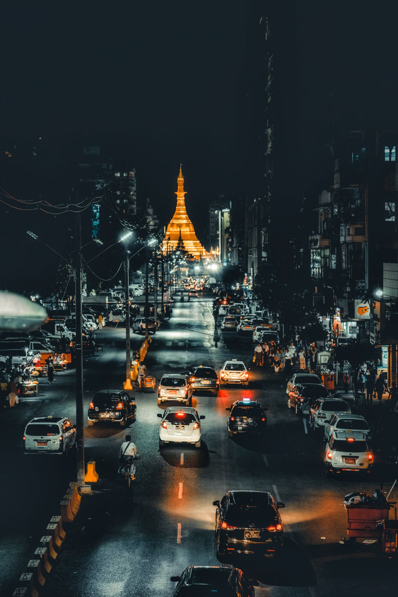
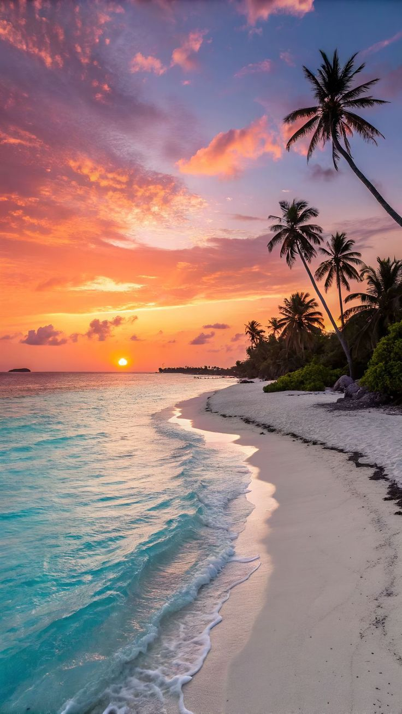

Premier Destinations In Myanmar

Bagan
"Ancient temples and pagodas spread across a mesmerizing plain,where history whispers through every stone and the sunrise casts a golden glow over the timeless landscape."

Mandalay
"A royal city adorned with ancient palaces,hilltop monasteries, and the iconic U Bein Bridge,where history,culture and breathtaking views come together in perfect harmony."

Inle Lake
"A serene lake surrounded by floating villages,lush gardens, and charming stilt houses,offering a peaceful escape and a glimpse into tradtional life"

Yangon
"The bustling city,home to the iconic golden Shwedagon Pagoda, rich colonial architecture,and lively markets, offer a vibrant mix of tradition,culture,and modern urban life."

Ngapali
"Ngapali is a serene coastal paradise famous for its golden sands, crystal-clear waters,and swaying palm trees.Relax on the beach,swim in the gentle waves,explore nearby fishing villages,or enjoy fresh seafood at sunset.It's the perfect mix of tranquility and natural beauty."